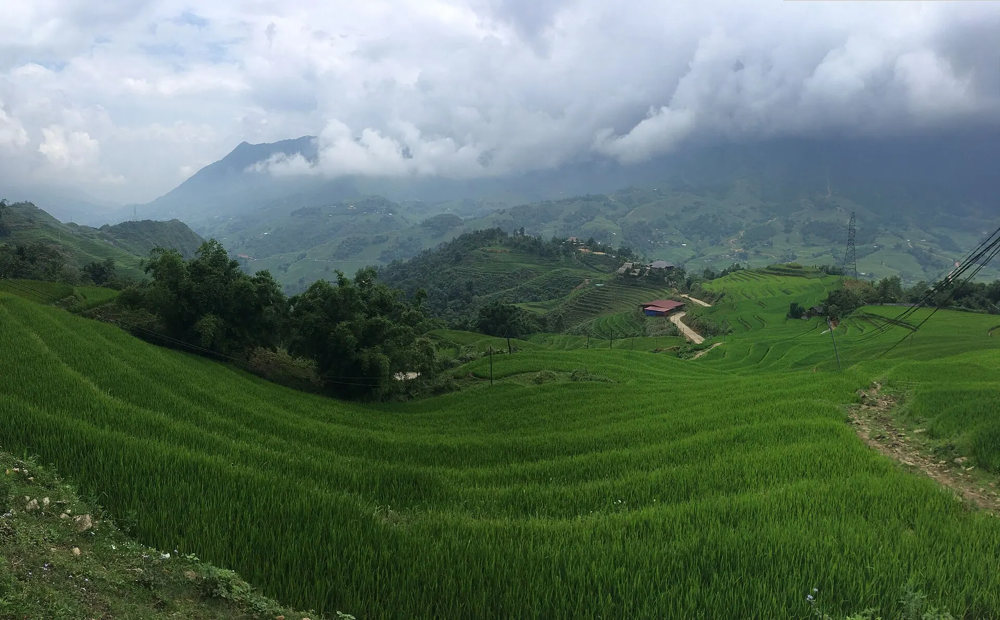

Thắng cố
Món ăn truyền thống của người H'Mông, nấu từ thịt và nội tạng ngựa cùng thảo quả.
Ảnh minh họa: Chợ phiên Bắc Hà – nơi bán thắng cố
Nằm ở độ cao 1.600m, Sa Pa quyến rũ bởi khí hậu mát mẻ quanh năm, ruộng bậc thang uốn lượn như những nấc thang lên trời và bản sắc văn hóa đặc sắc của người H'Mông, Dao đỏ. Đây cũng là cửa ngõ chinh phục Fansipan – "nóc nhà Đông Dương".
Đang tải thời tiết...
Bấm vào một tháng để xem có nên đi không
Ruộng bậc thang ngập nước phản chiếu trời mây, người dân vào vụ cấy.
Đi sáng sớm hoặc chiều muộn để có ánh sáng đẹp.
Ruộng bậc thang vàng óng – đẹp nhất nửa cuối tháng 9 đến đầu tháng 10.
Cuối tuần rất đông, homestay hết phòng sớm.
Đỉnh Fansipan và Ô Quy Hồ có thể xuất hiện băng giá, tuyết khi có không khí lạnh mạnh.
Nhiệt độ có thể dưới 0°C – mang áo phao, găng tay, mũ len.
Lễ theo âm lịch đổi ngày dương mỗi năm – kiểm tra lịch chính thức trước khi đi.
Món ăn truyền thống của người H'Mông, nấu từ thịt và nội tạng ngựa cùng thảo quả.
Ảnh minh họa: Chợ phiên Bắc Hà – nơi bán thắng cốGạo nếp nương nướng trong ống tre, dẻo thơm mùi khói bếp.
Cá hồi nuôi bằng nước suối lạnh Sa Pa, thịt chắc ngọt.
Ảnh minh họa: Nồi lẩu nóngĐồ nướng: thịt xiên, trứng nướng, cơm lam
Khu quảng trường – nhà thờ đá Sa Pa Báo saiLẩu cá hồi, cá tầm nuôi nước lạnh
Phố Xuân Viên, Sa Pa Báo saiThắng cố, lợn cắp nách, rau rừng
Đường Cầu Mây, Sa Pa Báo saiThắng cố, mèn mén, rượu ngô
Chợ trung tâm Sa Pa Báo saiPhở gà đen, cháo gà
Chợ trung tâm Sa Pa Báo saiCơm lam, gà đồi, rau cải mèo
Phố Cầu Mây, Sa Pa Báo saiThịt xiên, nấm nướng, khoai nướng
Quanh nhà thờ đá Sa Pa Báo saiCơm nhà người Dao: gà, rau rừng, rượu ngô
Bản Tả Van Báo saiGiá tham khảo mỗi người. Bấm địa chỉ để mở Google Maps xem giờ mở cửa và đánh giá mới nhất.
Chinh phục đỉnh 3.143m chỉ trong 15 phút.
Đi bộ qua Lao Chải, Tả Van, ngủ homestay người Dao.
Chợ tình Sa Pa, chợ Bắc Hà rực rỡ sắc màu.
Ngắm biển mây trên đèo Ô Quy Hồ lúc bình minh.
Tự gợi ý theo điểm đến và tháng đi (chọn ngày khởi hành ở phần Lịch trình để đổi tháng). Đánh dấu để ghi nhớ món đã chuẩn bị.
Thấy giá vé, giờ mở cửa hay quán đã thay đổi? Báo sai
400k–1,2tr / đêm
Đi bộ tới chợ đêm, nhà thờ đá, dễ đặt xe.
250k–700k / đêm
Ngủ giữa ruộng bậc thang, có bữa tối cùng chủ nhà.
1,5tr–4tr / đêm
View thung lũng, hồ bơi – hợp nghỉ dưỡng.
Xe giường nằm/limousine từ Hà Nội ~5,5 giờ (cao tốc Nội Bài – Lào Cai), hoặc tàu đêm tới ga Lào Cai rồi đi xe 35 km lên Sa Pa.
Giá phòng tham khảo cho 2 người/đêm, cao hơn vào lễ Tết và cuối tuần. Việt Travel không nhận hoa hồng từ các trang đặt chỗ.
Việt Travel · Lào Cai · Thời điểm đẹp: Tháng 9 – 11 (mùa lúa chín)
Đi bộ xuống bản Cát Cát, xem thác Tiên Sa và nhà người H'Mông.
Dạo nhà thờ đá, chợ đêm, thưởng thức đồ nướng và rượu táo mèo.
Dạo phố đêm một chút rồi về nơi ở nghỉ ngơi
Ăn sáng quán bình dân đông người địa phương gần nơi ở
Đi cáp treo lên đỉnh Fansipan 3.143m, săn mây và viếng quần thể tâm linh.
Ngắm đèo Ô Quy Hồ, thác Bạc và cổng trời.
Dạo phố đêm một chút rồi về nơi ở nghỉ ngơi
Mang theo bánh mì, xôi nếu khởi hành sớm
Trekking Lao Chải – Tả Van giữa ruộng bậc thang.
Ăn trưa tại homestay, mua thổ cẩm ở Tả Van.
Dạo phố đêm một chút rồi về nơi ở nghỉ ngơi
Kết thúc tour: trả phòng, mua đặc sản và di chuyển về.
Ăn sáng tại nơi ở (thường đã gồm trong giá phòng)
Thăm bản Tả Phìn của người Dao đỏ, hang Tả Phìn.
Tìm hiểu nghề thêu thổ cẩm, tắm lá thuốc.
Dạo phố đêm một chút rồi về nơi ở nghỉ ngơi
Kết thúc tour: trả phòng, mua đặc sản và di chuyển về.
Ăn sáng quán bình dân đông người địa phương gần nơi ở
Đi chợ phiên Bắc Hà (sáng Chủ nhật) – chợ vùng cao sặc sỡ nhất Tây Bắc.
Thăm dinh Hoàng A Tưởng, vườn mận Bắc Hà.
Ăn tối gần nơi ở – chọn quán đông khách địa phương
Kết thúc tour: trả phòng, mua đặc sản và di chuyển về.
Chi tiết mức tiết kiệm
Chi tiết mức thoải mái
Chi tiết mức tiết kiệm
Chi tiết mức thoải mái
Chi tiết mức tiết kiệm
Chi tiết mức thoải mái
Chưa gồm vé máy bay/tàu xe tới Sa Pa. Giá tham khảo, thay đổi theo mùa.
Muốn đi nhiều nơi trong một chuyến? Ghép Sa Pa với các điểm đến khác.